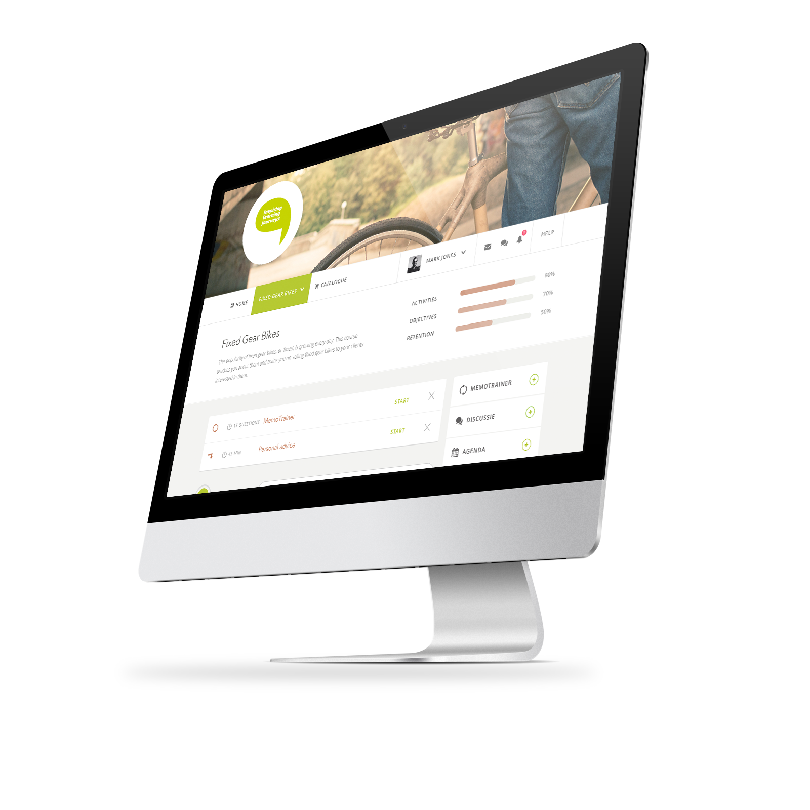
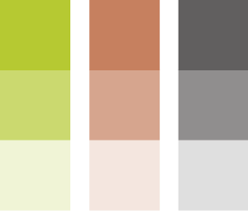
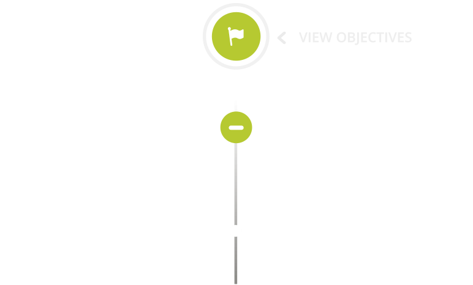
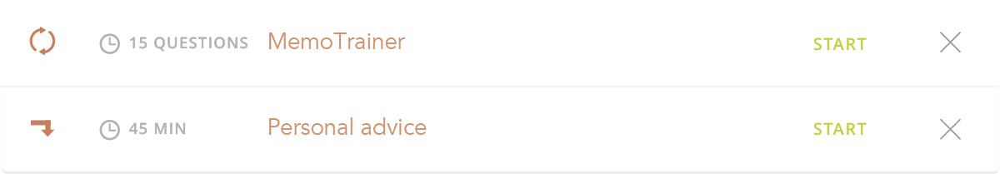
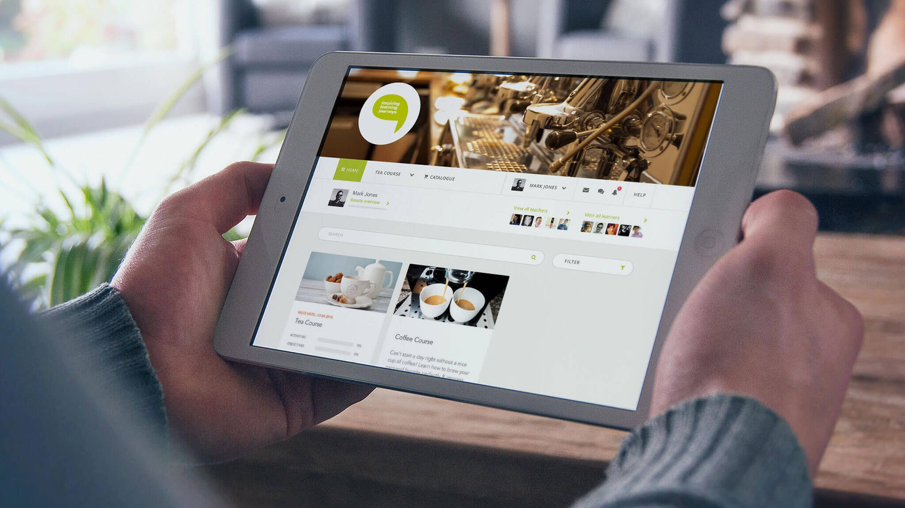
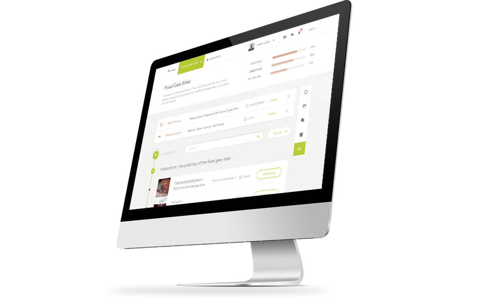
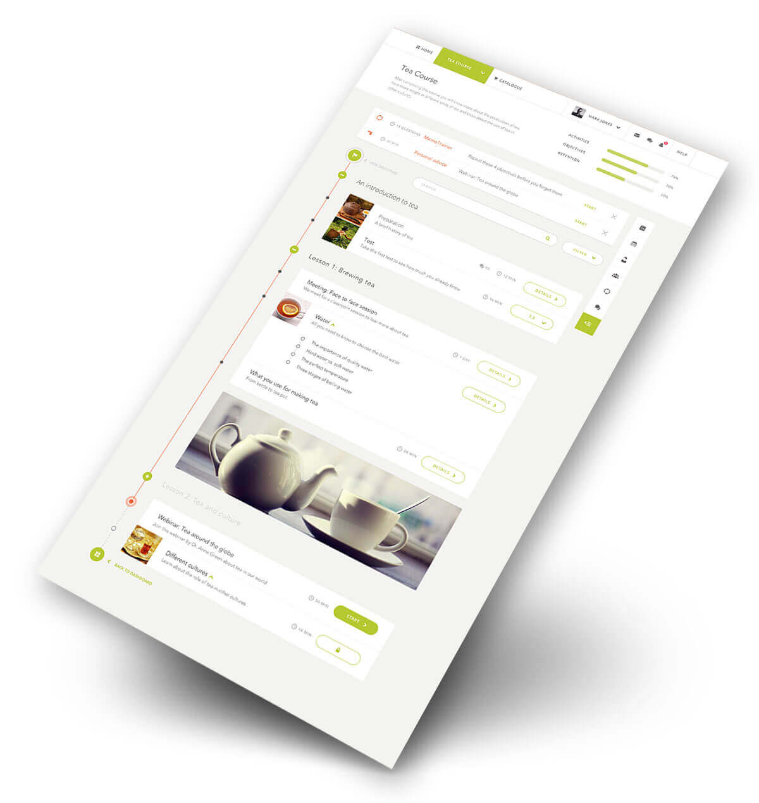
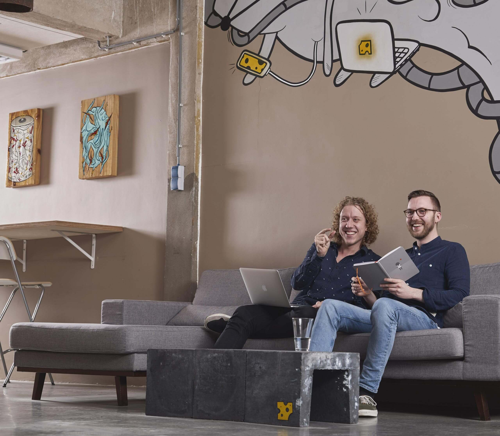

Redefining The Learning Journey
Case Study / LaunchedUpgrading an e-learning experience by designing less.
- Project
- E-learning Tool
- Deliverables
- Interaction design & visual design
- Team Members
- Entire Rodesk Team

Cut the crap, show me the visuals
Background
To be honest, the e-learning platform of aNewSpring embodied everything users could possibly want. Nonetheless, this very quality made the platform highly impractical and cluttered from a user's perspective.
Even though any imaginable functionality was available - great news for all customers of aNewSpring - it did little to improve their user experience. We took this as our starting point on our search for a more rewarding and inspiring educational journey.
Our Mission
We managed to boil down the myriad functionalities of an immensely complete platform to its core proposition: what do users actually need to learn. What functionality is required in what particular order, and what sort of hierarchy is the best match for such vast amounts of information?
This called for a bit of sacred cow-tipping, but in the end our interventions greatly improved the user experiences offered by this promising platform.

White Label Design
A New Spring's various customers all want to see their own specific corporate identity emerge from their e-learning environments. This demands sufficient space, while simultaneously requiring consistent user experiences with a uniform feel to them. Off course irrespective of the particular customer involved. Challenge accepted.
Inspiring Learning Journey
The folks at aNewSpring always wonder why learning is still offered as a 'one size fits all’ solution. From their perspective, that time is past.
The adaptive system offers its users activities based on their own knowledge profile. By focusing on their concerns, they create a personalized and inspiring learning path for each participant.


Adaptive Course Concepts
There are many ways in which an adaptive course can be designed in the massive system of aNewSpring. Multiple learning concepts available for different situations, such as case-based learning, an entrance test followed by remedial training modules, learning through practice and learn and repeat. The new interface helps you to design the course that best suits your situation.


Trainers Can Design Exceptional Courses And Create The Ultimate Mix In The Learning Journeys.


Ready To Make Your People Happy?

- Marten de Prez
- Owner, aNewSpring
"Complex design issues are peeled off and made manageable. Improving our user interface together with Rodesk was the best decision of 2015."

Knowledge For The Dutch Corporation Sector
Website CorporatieNL